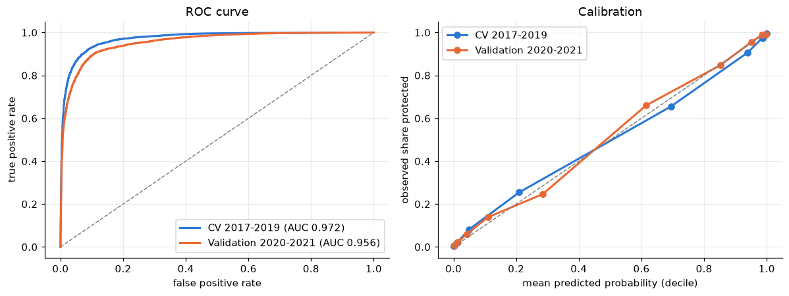
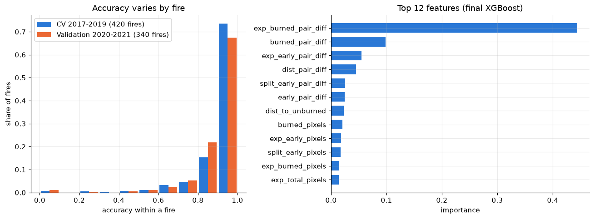

Real results from the repo. Random Forest in every row except the last, and the axis starts at 50%.
featured · research
Wildfire retardant drops: which side was protected?
A geospatial machine-learning pipeline that predicts which side of an aerial fire-retardant drop is the protected side, using day-of-burning rasters and the drop geometry. Research at Washington and Lee. The biggest jump came from comparing each drop's two sides across the whole fire, not just next to the drop.
- 91.5%fire-grouped 5-fold CV (20,022 drop sides, 420 fires)
- 89.6%on 2020–2021 drops labeled by different people
- 68.9%for a simple rule baseline